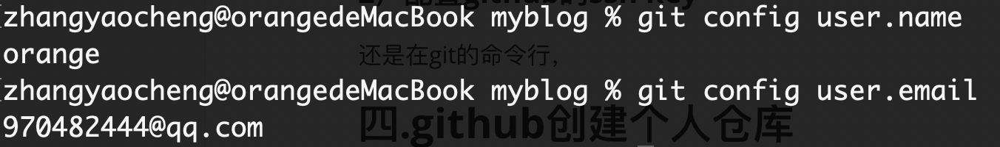
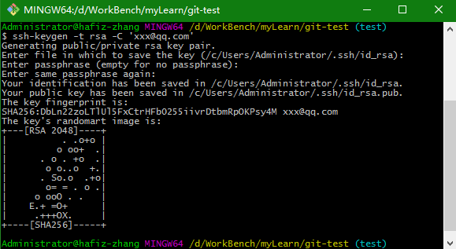
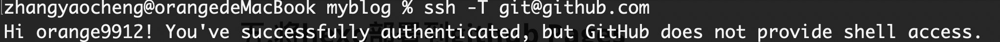
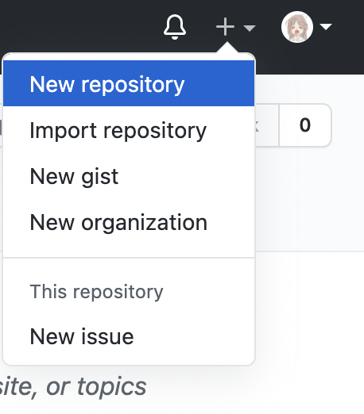
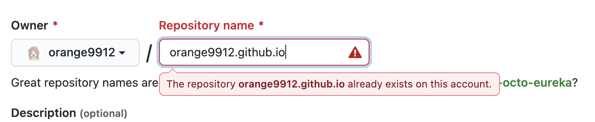
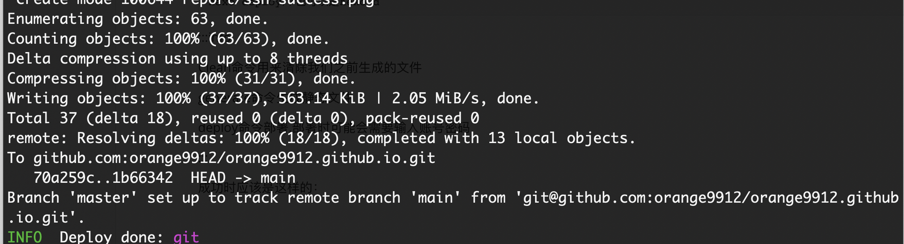
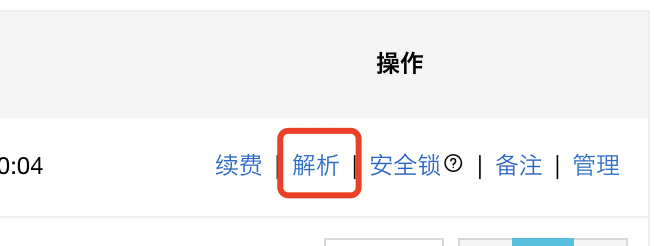
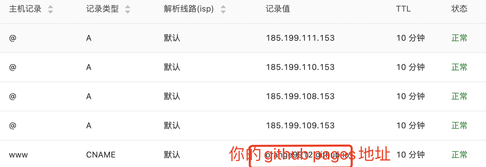
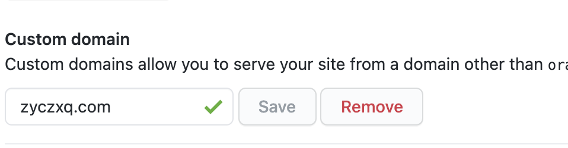

# 个人博客的配置和搭建过程
# 一、前言
之前就萌生过搭建个人博客的想法，只是因为自己技术能力的不足就一直拖延着，直到最近查资料的时候发现了 github pages 和 hexo 这两个宝藏之后，又看到大佬们漂亮的博客，一咬牙，就开始捣鼓怎么搭建一个自己的个人博客。上网查了挺多资料，其实很多都不太一定正确，中途踩了很多坑，为了方便朋友和自己以后再次配置，故记录下来配置过程。
# 二、使用的工具和简介
# 1.hexo
Hexo 是一个快速、简洁且高效的博客框架。Hexo 使用 Markdown（或其他渲染引擎）解析文章，在几秒内，即可利用靓丽的主题生成静态网页。
# 2.git
Git 是目前世界上最先进的分布式版本控制系统，可以有效、高速的处理从很小到非常大的项目版本管理。我们这次个人博客的搭建就是基于 github pages。
# 3.nodejs
Node.js 是一个基于 Chrome V8 引擎的 JavaScript 运行环境。Node.js 的包管理器 npm, 是全球最大的开源库生态系统。我们所使用到的 hexo，就是基于 nodejs 编写的，需要使用到 nodejs 的包管理器 npm.
# 三、工具的安装及配置
# 1.git
git 的安装网上已经有很多，安装过程也没有什么坑，这里就不再赘述了，详细可以看官网的说明
#https://git-scm.com/downloads
或者查看廖雪峰老师的教程：
#https://www.liaoxuefeng.com/wiki/896043488029600/896067074338496
注意
安装好 git 之后，还需要进行用户名、邮箱、ssh 的配置
# 1）配置用户名、邮箱
git config --global user.name "yourname" | |
git config --global user.email "youremail" |
yourname 对应你的用户名，youremail 里对应你的 github 邮箱
使用以下两条命令可以检查你有没有输入正确的用户名和邮箱
git config user.name | |
git config user.email |

# 2）配置 github 的 ssh key
还是在 git 的命令行，输入这个命令来产生 ssh-key：
ssh-keygen -t rsa -C "youremail"//youremail换成你的github邮箱 |
生成过程中它会问你生成的路径之类的，通常默认就好（一路回车）
如果成功的话应该是这样的：

它会提示你公钥生成的位置（上图中的 “your public key has been saved in xxx”），打开这个公钥文件（.pub 后缀）== 复制里面的内容到 github 中个人资料 ->ssh keys->new ssh keys->key 里面，点击添加，即可添加成功。
ssh -T git@github.com//执行这条命令看有没有成功配置ssh |

# 2.nodejs
直接上官网下载安装就好，一般没有什么坑。
完成以后在命令行输入以下命令查看是否安装成功
node -v//Vxx.xx.x | |
npm -v//Vxx.xx.x |
# 3.hexo
配置 hexo 比较的简单，配置过程中遇到问题参见 hexo 官方文档。
$ npm install -g hexo-cli
$ hexo -v//版本，能查看表示安装成功
$ hexo init 文件夹的名字
$ cd 文件夹的名字
$ npm install //安装依赖
$ hexo g //生成静态页面
$ hexo server //这个时候就可以在localhost:4000查看自己的博客雏形了
ctrl+c将服务关闭
# 四、github 创建个人仓库
前提：有一个 GitHub 账户
如果没有，可以去官网上创建一个，然后走步骤 3 的 git 配置 ssh。
# 1. 新建仓库：

创建一个和你用户名相同的仓库，在后面加上 github.io
这样部署到 github pages 上的时候才会被识别，如 xxx.github.io

必须是公开仓库
# 五、将 hexo 部署到 github Pages
# 1. 修改配置文件
打开我们根目录下的_config.yml，翻到最后
deploy: | |
type: git | |
repo: https://github.com/YourgithubName/YourgithubName.github.io.git//你的github项目地址，也可以用ssh地址 | |
branch: main |
# 2. 安装 deploy-git
npm install hexo-deployer-git --save |
--save 的意思是只在这个项目安装这个包
# 3. 进行部署
在根目录执行以下命令
hexo clean | |
hexo generate//也可以是hexo g | |
hexo deploy//也可以是hexo d |
Clean 命令用来清除我们之前生成的文件
generate 命令生成静态文件
deploy 命令部署，部署时可能会需要输入账号密码
成功时应该是这样的：

然后点开仓库的 setting->github pages，选择我们刚刚的分支，点击 save，开启 pages 服务
过一会你就可以在 https://yourname.github.io 上面看见你的博客了
# 六、设置个人域名（可选）
去阿里云，注册一个账户然后买一个个人域名，com 比较贵一点，59 首年，cn 的便宜一些，29 首年，纯粹看个人喜好。
# 1. 添加解析
购买之后，去域名控制台，点击域名解析

添加如下记录
# 2. 修改 GitHub pages
登录 GitHub，进入我们之前的仓库 -> 设置 ->pages
在 custom domain 中输入你购买的域名，点击 save

# 3. 修改博客配置文件
在博客文件的 source 目录下新建一个 CNAME 文件（不要后缀）内容写上你的域名
# 4. 重新部署
最后，走一遍 5.3 中的步骤，重新部署上去，过一段时间就可以通过自己的域名访问了
而且本来国内访问 GitHub 巨慢的，绑定域名之后快了非常多
# 七、配置主题的问题
在 hexo 的官方中 theme 中找到自己喜欢的主题，根据主题作者的教程配置就好，这里涉及到一些配置文件的配置，每个主题都不一样，就不展开说了
# 八、错误问题及解决方法
# 1.mac 下 npm 命令报 EACCES 权限错误
处理方法见：Resolving EACCES permissions errors when installing packages globally | npm Docs (npmjs.com)
不要乱用 sudo 覆盖权限，而是要能正常 npm install 某个包才算是搞定了权限
# 2.mac 下 hexo 使用 hexo d 报权限错误
修改文件权限，使用 chown 修改文件夹权限后即可。